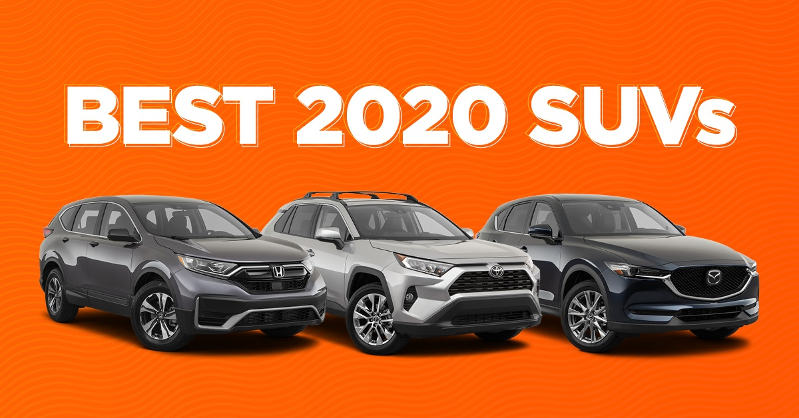

Often also referred to as crossovers, tend to be taller and boxier than sedans, offer an elevated seating position, and have more ground clearance than a car. They include a station wagon-like cargo area that is accessed through a flip-up rear hatch door, and many offer all-wheel drive. The larger ones have three rows of seats.
Sizes start at subcompact (Hyundai Kona, Nissan Kicks), mid-size, and go all the way to full-size (Ford Expedition, Chevrolet Tahoe). Luxury brands offer many SUV models in most of the same size categories.
Due to the high demand for SUVs in the market, luxury and sports vehicle brands started their presence in this category.
SUV advantages:
- Due to the high demand for SUVs in the market, luxury and sports vehicle brands started their presence in this category.
- Big trunk. In the SUVs it is easy to carry large loads that do not fit into the other cars.
- Resistance to bad weather. SUVs are not afraid of snow, frost, wind, or heat.
- Status. They can be used for business meetings and travel.